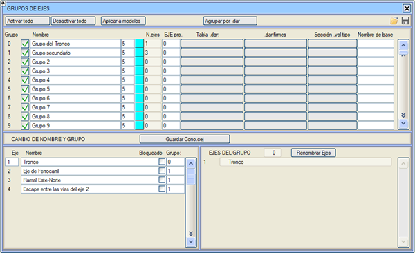

| |
|
Güzergah Grupları
|
Planda tanımlanmış olan güzergah gruplarına isim vermeyi sağlayan bir menü açar. Aynı şekilde, bu menü, bazı grupların hesaplamalarını ve komple proje hesaplamalarında gösterimini engellemek için bu grupları etkinleştirmeye/devre dışı bırakmaya olanak tanır. Güzergah gruplarının etkinleştirme/devre dışı bırakma ve isim yapılandırması .gru dosyaları aracılığıyla kaydedilebilir veya yüklenebilir. Bu pencereden ayrıca her grubu oluşturan çeşitli güzergahların isimleri de görülebilir ve güzergahların grubunu ve adını değiştirmek mümkündür; değişikliklerin kalıcı olması için [<proje>.cej Kaydet] seçeneği bulunur. (bir güzergahın ait olduğu grubun ataması .cej dosyasında saklanır). Her gruba, pkcvXX.res dosyalarında hacimleri yansıtmak için farklı bir güzergah atanabilir. Değer 0 olarak bırakılırsa, Proje tablosundaki genel hacim yansıtma güzergahı kullanılır. 
Her grup için .dar Tablosu sütununda bir .dar tablosu tanımlanabilir. Her grup için .dar üstyapı sütununda üstyapı için bir .dar tablosu tanımlanabilir. Her grup için Tip Kesit .vol sütununda bir .vol dosyası aracılığıyla bir tip kesit tanımlanabilir. Eğer güzergahın kendine ait tanımlı bir kesiti varsa güzergahınki geçerli olur, yoksa grubunki kullanılır. Her grup için Temel Ad sütununda .vol dosyaları için bir temel ad tanımlanabilir ve eğer burada tanımlanırsa, bu genel temel adın üzerine yazar. Bu grup bilgisi projenin .pol dosyasında kaydedilir/geri yüklenir. Her güzergah adının yanında varsayılan olarak camgöbeği renginde bir kutucuk bulunur. Bu kutucuğa tıklandığında, her güzergaha ve dolayısıyla her gruba belirli bir renk indeksi atamayı sağlayan bir renk seçim penceresi açılır. Bu sayede farklı gruplar GÜZERGAH (PLAN), ENKESİT (ALZADO) ve KOMPLE menülerinde ve Dekorasyonsuz modda renklerle ayırt edilebilir, çünkü tip 53 (güzergahlar) çizgileri burada tanımlanan renkle çizilir. [.dar'a göre Grupla] butonu, güzergahları her bir güzergaha atanmış metraj tablosuna göre gruplamayı sağlar. Bu, ortak metrajlı listeler oluştururken kullanışlıdır (cvoltot.res, cvolgru.res, cvolejes.res,...). Bu menünün alt kısmında, sol bölgede, projenin tüm güzergahları görülebilir. Burada aşağıdaki işlemler yapılabilir:
[Güzergahları Yeniden Adlandır] butonu, bir grubun tüm güzergahlarını, başlangıç (veya bitiş) noktalarının bir ana güzergah üzerine yansıtıldığı kilometreye referans vererek yeniden adlandırmayı sağlar. |